Registers Block
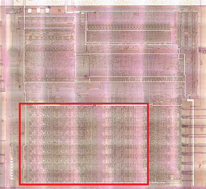
⚠️ Read and double-check everything here very thoughtfully. Complementary logic can blow your mind. This additional work to proofread and verify register and bus connections (referred to as "Paths") is associated with #240
Register Bit
All registers use a common module (with a small exception for Z/W register bits, see further in the Temp Registers section).
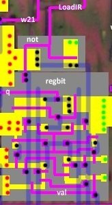
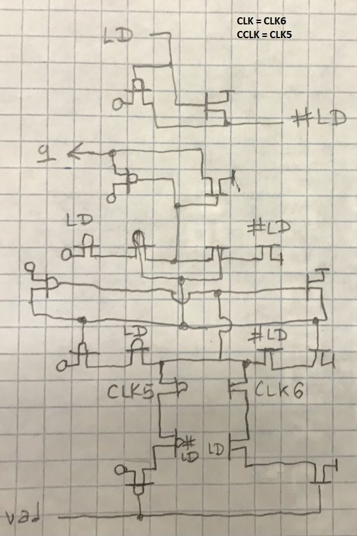
Latch with complementary set enable, complementary CLK.
- In the middle is a FlipFlop made of not
- Input value can be written to FlipFlop only if CLK=1 and LD=1
- When LD=0 the FlipFlop value is updated with the old value
- The output contains a DLatch with a gate memory that opens when LD=0 (so that the old value is returned during the write (LD=1))
- So the written value becomes relevant when LD 1->0 changes aka negedge (when the output latch opens and is updated with the value from FlipFlop).
- The whole thing is complicated by the complementary layout of the LD and CLK signals.
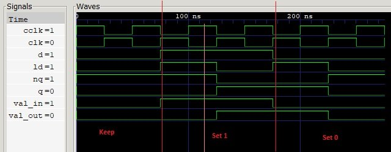
Registers
| Reg | Name | Input | Output | Load signal |
|---|---|---|---|---|
| 0 | IR | DL | IR[7:0] | w26 |
| 1 | A | fbus | abus, bbus | x38 |
| 2 | L | ebus | abus, bbus, cbus | x40 |
| 3 | H | fbus | abus, bbus, dbus | x39 |
| 4 | E | ebus | bbus, cbus | x50 |
| 5 | D | fbus | bbus, dbus | x48 |
| 6 | C | ebus | bbus, cbus | x51 |
| 7 | B | fbus | bbus, dbus | x49 |
| 8 | Z ("Temp Low") | Circuit (see below) | zbus, bbus, cbus | x60 |
| 9 | W ("Temp High") | Circuit (see below) | wbus, dbus | x59 |
Internal bottom buses
The names of some buses are arbitrary (do not make sense).
| Bus | From Reg | To Reg | Precharge | Bus Polarity |
|---|---|---|---|---|
| abus | H, L, A, SPL, SPH, PCL | alu[7:0] to top (no reg) | CLK2=0 | inverse hold |
| bbus | B, C, D, E, H, L, A, Z, SPL, SPH | DV[7:0] to top (no reg) | CLK2=0 | inverse hold |
| cbus | C, E, L, Z, SPL, PCL | IDU Lo | CLK2=0 | inverse hold |
| dbus | B, D, H, W, SPH, PCH | IDU Hi | CLK2=0 | inverse hold |
| ebus | Dedicated circuit | C, E, L | CLK4=0 | |
| fbus | Dedicated circuit | B, D, H, A | CLK4=0 | |
| zbus | Z | SPL, PCL | ||
| wbus | W | SPH, PCH | ||
| adl | IDU Lo | SPL, PCL, Z | ||
| adh | IDU Hi | SPH, PCH, W |
There are small pieces for Precharge scattered throughout the circuitry.
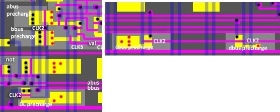
Regs To Buses
Between the registers scattered small logic for issuing their values to the buses.
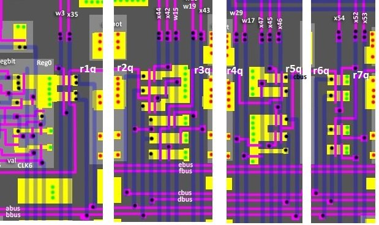
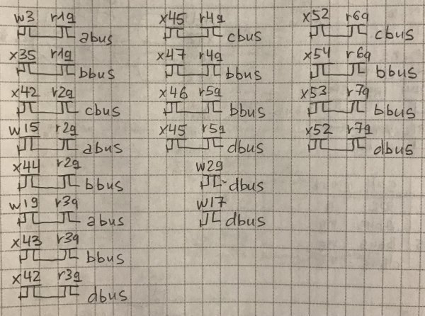
Temp Registers vs Bus Logic
The value on the temp registers (Z/W) does not come directly from the buses, but using logic. And, attention, the input of Z/W registers has inverse polarity (active low), but the output of the registers to the bus zbus/wbus in the regular polarity, so at the output of Z/W registers additional inverter (not) is sticked.
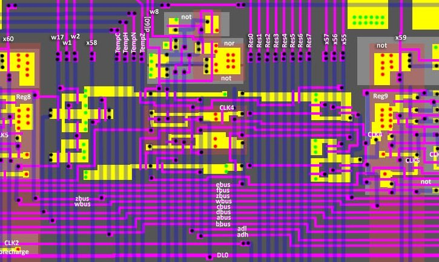
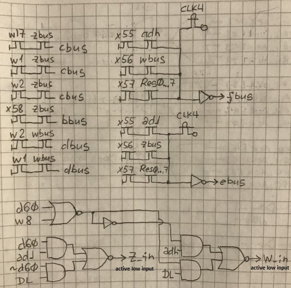
The picture shows how the signals at the input and output of Z/W registers vary compared to conventional registers:
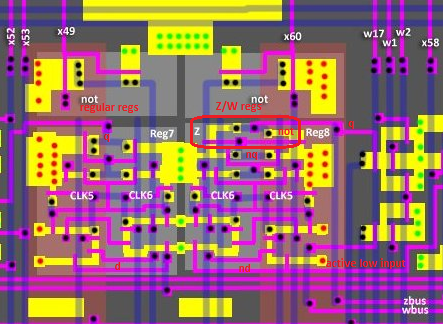
Also: the inverters for the ebus/fbus buses most likely act as a transparent DLatch. If during the evaluation of the bus connection none of the znands "opens", the precharge that was made during CLK4=0 will remain at the inverter input. I don't think it is necessary to add DLatch for HDL implementation, it is enough to treat this part of the circuit as dynamic AOI-31.
SP Register
⚠️ A distinctive feature of the SP register bits is that the value on them is loaded and kept in the inverse polarity. In addition to the regular output the register also has a complement output.
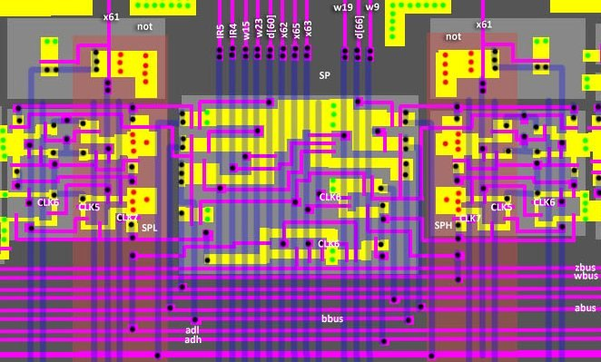
SP vs Buses:
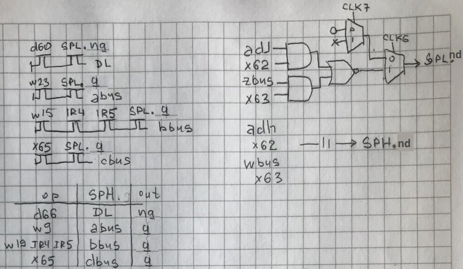
Between CLK6 and CLK7 there is a short period (1 half-cycle) when the SPH/SPL register input is in a floating state. To maintain this "floater" it is recommended to use a transparent latch in your implementation for the SPH/SPL inputs.
PC Register
⚠️ A distinctive feature of the PC register bits is that the value on them is loaded and kept in the inverse polarity. In addition to the regular output the register also has a complement output. The register also has an Active-low input for resetting.
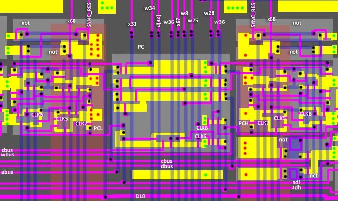
PC Regbit:
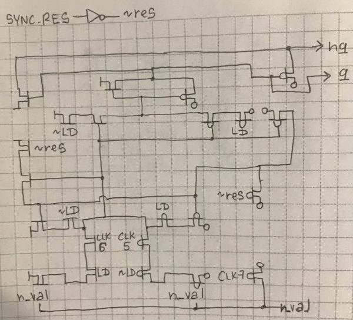
PC vs Buses:
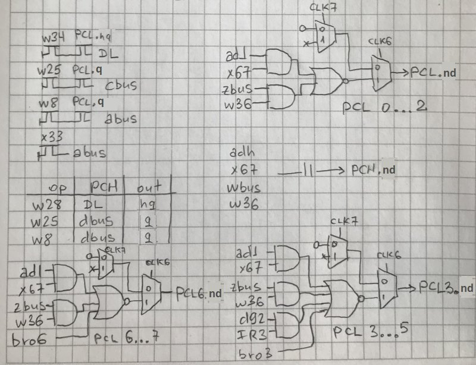
Between CLK6 and CLK7 there is a short period (1 half-cycle) when the PCH/PCL register input is in a floating state. To maintain this "floater" it is recommended to use a transparent latch in your implementation for the PCH/PCL inputs.